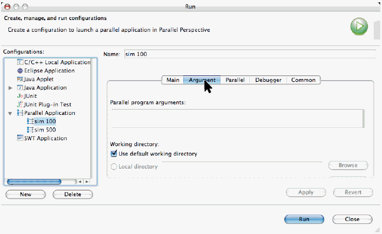

Launching Parallel Programs
The parallel launch configuration dialog
Topics include:
- selecting the machine to run on
- selecting executable to run
- supplying resource requirements (currently only number of
processes, but this will include other scheduler type stuff later)
- debugger information (this is not finished yet)
This section explains how to launch a parallel program.
If you do not have parallel programming resources, you can
learn how to launch the PTP Simulator instead, to demonstrate
PTP functions. See
Launching the Simulator
The old way to launch parallel programs
- Open the run configuration dialog (Run...)
- Create a new C/C++ Local Application (or Local Application)
- Choose the project
- Enter the full path of the
mpirun (or mpiexec)
command in the C/C++ Application (or Application) field
- Select the Arguments tab
- Enter the
mpirun (or mpiexec)
arguments and the name of the executable
- Select Apply and then Run
Limitations of the old way:
- No indication of job or process status
- Cannot easily interact with a job scheduler
- Must have MPI installed on local machine
- No access to individual stdout of processes
- No ability to debug program
The New Way: Launching Parallel Programs
- Open the run configuration dialog (Run...)
- Create a new Parallel Application

- In the Main Tab
- Enter a name for the configuration
- Choose the project
- Choose the executable from the project

- Select the Arguments tab
- Enter any program arguments
- Change working directory if necessary

- Select the Parallel Tab
- Choose the machine that the job will run on
- Enter the number of processes to run
- Click on Apply, then Run.

- The parallel program begins execution...
Continue with Monitoring Parallel
Program execution with the PTP Runtime Perspective
.
Back to Top | Back to Table of Contents